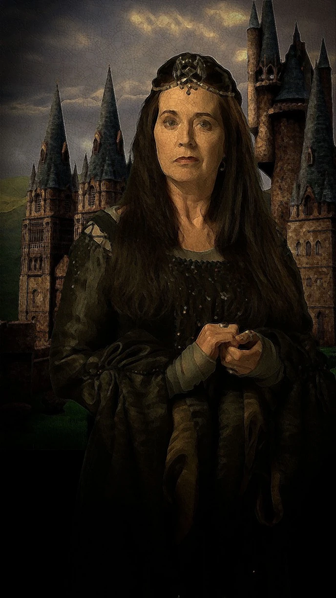
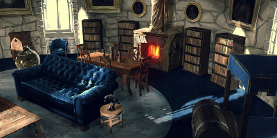
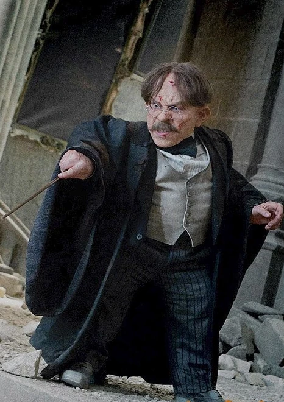
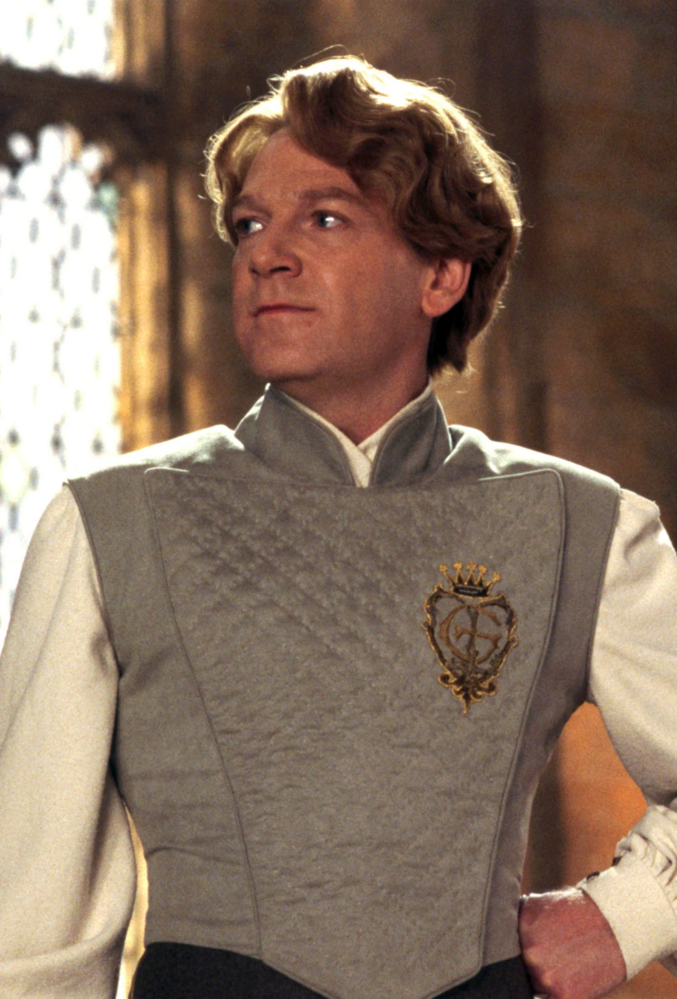
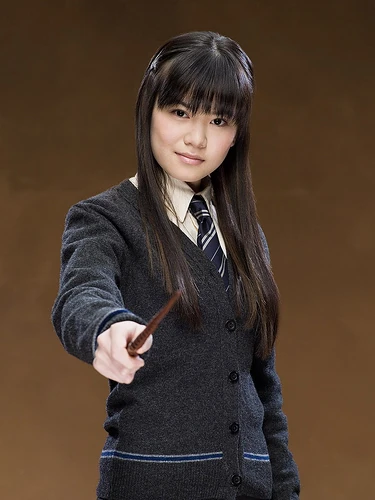

Ravenclaw
Rowena Ravenclaw
La Casa Ravenclaw es una de las cuatro casas en la escuela de magia Hogwarts. Fundada por Rowena Ravenclaw, esta casa valora la sabiduría, la creatividad y la inteligencia en sus estudiantes. Los miembros de Ravenclaw son conocidos por su agudeza mental y su búsqueda constante de conocimiento. Aunque a veces se les considera reservados o excéntricos, los Ravenclaws son apreciados por su capacidad para resolver problemas difíciles y su amor por el aprendizaje. La casa acoge a estudiantes de diversos orígenes mágicos, independientemente de su linaje. Los colores de la casa son azul y bronce, y su animal representativo es el águila. Ravenclaw tiene una larga historia en Hogwarts y ha producido muchos magos y brujas destacados a lo largo de los años."
Un alumno de Ravenclaw se caracteriza por su aguda inteligencia y su búsqueda constante de conocimiento. Son personas curiosas y creativas, con una sed insaciable de aprender y descubrir. Valorando la sabiduría por encima de todo, los Ravenclaws disfrutan desafiando sus mentes y resolviendo problemas complejos. Su capacidad para pensar de manera analítica y encontrar soluciones innovadoras los distingue en cualquier situación. Aunque suelen ser reservados, su amor por el aprendizaje los lleva a destacar en áreas académicas y creativas. Los Ravenclaws son admirados por su perspicacia y su capacidad para pensar fuera de lo común, lo que los convierte en valiosos colaboradores y líderes en su comunidad.
La sala común de Ravenclaw se encuentra en una de las torres más altas de Hogwarts, accesible a través de una escalera en la Torre de Ravenclaw, cerca del dormitorio de la casa. Los estudiantes deben responder a una pregunta planteada por una estatua de águila para acceder a la sala común.
Rowena Ravenclaw
Filius Flitwick
Gilderoy Lockhart
Cho Chang
Luna Lovegood